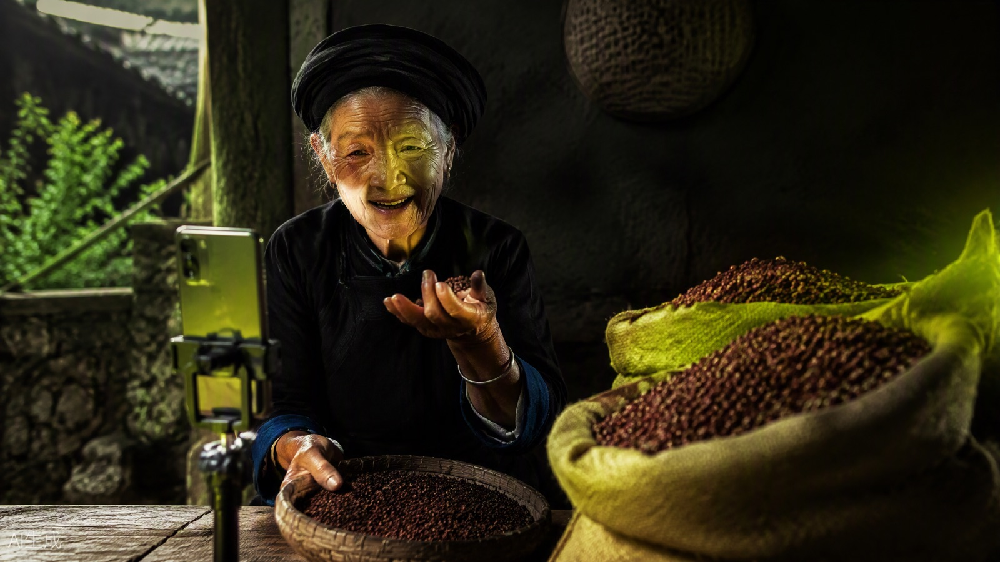
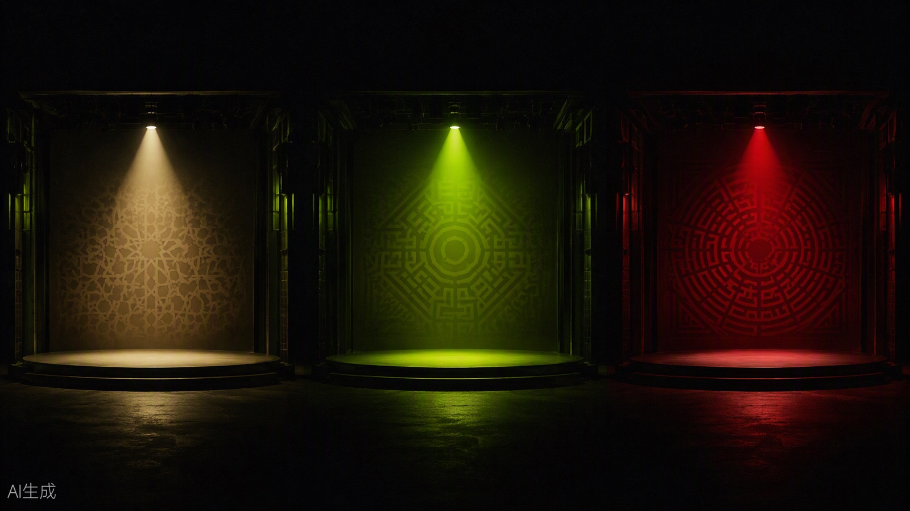
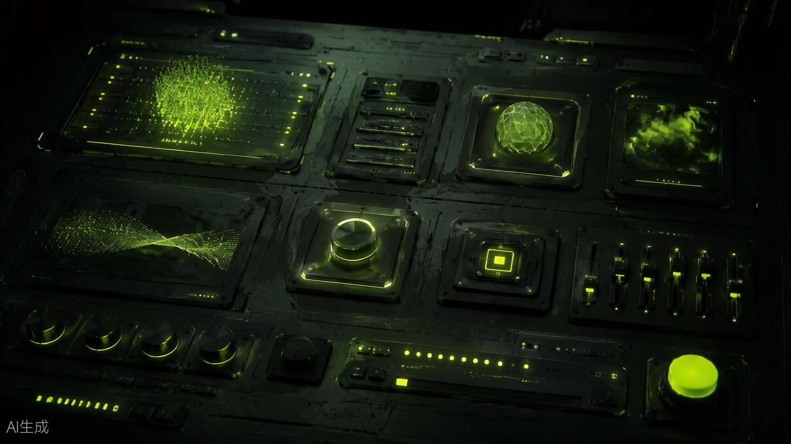

W1–W4
认知与素养
W1–W4 原教学记录
- 解释大模型与 Agent 的区别
- 按任务选择工具并验证输出
- 完成带 AI 使用说明的多语种短片
ICUC AIGC创意工作坊 · 2026秋季学期
AI 国际传播实务 —— 从符合自己审美的图片开始，逐步学习图文、故事、视频与剪辑，完成一部属于你们的短片。
从学生自己的兴趣与生活出发，学习提出要求、判断结果和控制修改。W5–W7 先完成个人图像作品，W8 起组成 2–3 人小组，把故事、分镜、画面与声音逐步汇入一部 60–90 秒短片，语言自由。
W5 从图片创作开始：提出要求、判断结果、控制修改。W1–W4 保留原教学资料。
上课时使用微信扫描教师为本次课展示的签到二维码，填写本人姓名和学号，并确认提交完成。各课次独立记录，请使用本次课的二维码。
上课：每周二 18:00–21:00；W5 起按 3×45 分钟组织教学，休息与机动时间另计。
渠道：发送邮件提交到 icuc_aigc_workshop@126.com
命名规则：W周次_学号_作品名.zip；小组作业列出全部组员学号，每人附个人贡献说明。
完成时间：尽量当堂完成并提交；确需补交时沿用每周日 21:00 截止。
补交规则：迟交 24h 内扣 30%，超过 24h 不计分。
过程说明：简短说明 AI 帮助了什么、自己改了什么及原因，并保留必要的素材来源。
W5–W7 个人创作；W8 起固定小组，后续作业逐步汇入同一部短片。
从自己的审美出发，学习提出要求、判断结果与控制修改，再把图像、故事、声音和剪辑组合成完整作品。
W1–W4 原教学记录
从自己的审美出发
把故事变成视听素材
让作品清楚地表达
贯穿全程：能亲自完成关键操作，能判断结果是否符合要求，能解释一次有理由的修改；涉及真实信息时核对来源。
W1–W4 保留原教学资料；W5–W16 每课 45 分钟讲解演示、90 分钟实操，尽量当堂完成。
阶段目标：保留 W1–W4 原有内容供回顾；W5 起按新版大纲实施。
进入板块独立页面 ↗
认识 LLM 大语言模型与 Agent 智能体，思考 AI 时代自己的学习、创作与行动方向。
在个人电脑上安装 Workbuddy 和 Obsdian，然后用 Workbuddy 基于 W1 课程内容做一份课程个人心得。形式不限，可以是 DOCS、PPT、视频、图片、思维导图等。

从输入质量、上下文工程与个人知识库出发，建立面向学习与创作的 AI Native 工作方式。

阶段目标：W5–W7 独立完成壁纸、系列图与图文设计；W8 组成 2–3 人小组，确定短片题目与故事。
进入板块独立页面 ↗阶段目标：沿用小组题目，完成分镜、动态素材、声音与基础剪辑；每个人都参与关键操作。
进入板块独立页面 ↗阶段目标：完成字幕、全片结构与节奏，通过同伴观看反馈修订，最终展示 60–90 秒小组短片。
进入板块独立页面 ↗← 横向滑动 · 点击卡片查看课程内容 →
W5–W7 完成个人视觉作品；W8 起通过固定小组逐周积累故事、分镜、画面与声音，最终完成 60–90 秒短片。
每周 45 分钟讲解演示 + 90 分钟实操，尽量当堂完成作业。期末 2–3 人合作，语言自由；考勤占总评 40%，作品占 60%。
阶段成果30 秒多语种自我介绍
在个人电脑上安装 Workbuddy 和 Obsdian，然后用 Workbuddy 基于 W1 课程内容做一份课程个人心得。形式不限，可以是 DOCS、PPT、视频、图片、思维导图等。
阶段成果个人视觉作品 + 小组故事初稿
阶段成果分镜表 + 动态与声音素材 + 试剪片段
阶段成果60–90 秒小组短片 · 语言自由
期末整理作品与证据，展示团队成果，也说明个人贡献。
沿用课程总评：考勤 40% + 作品 60%。作品内容与新版课程同步。
依据课程考勤记录评定；请假、迟到、早退等具体认定按任课教师公布的细则执行。
结合个人课堂作品、小组制作过程和期末 60–90 秒短片进行评价。每位同学说明自己的实际贡献。
以下为共同评价要点；作品内部细分权重以教师公布的细则为准。
作品有明确意图，能够正常查看或播放，内容清楚，达到当周任务的基本要求。
允许查阅步骤单，但能亲自完成关键操作。小组合作中，每个人都参与图片、动态素材与基础剪辑。
能指出一个具体问题，展示修改前后，并解释自己的选择。
期末提交：60–90 秒短片、小组创作说明、必要素材来源与 AI 使用说明、每人个人贡献说明。2–3 人合作，语言自由，可结合静态图片、动态镜头、文字和声音。
多工具横评、强制外语版本、海外发布和传播数据报告不列入本轮必达要求。
查看作业与提交要求 →使用微信扫描或识别二维码